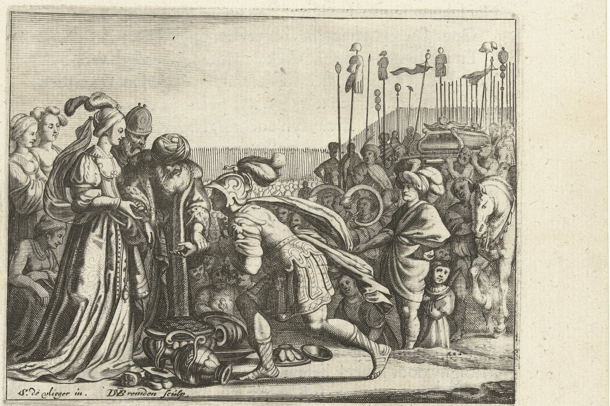

Joshua 15 — The Mister Translation

⚠ The engraving stages the BETROTHAL (Othniel kneeling to receive Caleb's hand on Achsah, v17) rather than the springs-of-water scene two verses later (v18–19) — the moment this project's own translation keeps as 'he gave him Achsah his daughter as a wife,' with no ceremony described in the Hebrew at all. The heaped helmets and vessels at their feet are the artist's own invention, standing in for Kiriath-sepher's capture (v16) the text never stages as a scene. No painting of Achsah's own later request — the chapter's real centre of action — is known to survive; this project shows the nearest artistic record of the episode instead of inventing the missing scene.

★★★ ‘And the lot was’ is the exact sentence this project's own Joshua 14 closing note promised would open this chapter — and it opens only one other chapter in the whole Hebrew Bible. Vayehi ha-goral stands here and at Joshua 17:1 (already on these pages), Manasseh's own district list — the two places the actual casting verb this project's own goral dictionary entry has been tracking since Numbers 26 finally appears, rather than the summarizing be-goral, ‘by the lot,’ Joshua 14:2 (now on these pages) used a chapter early. Judah draws first.
★★ This border survey names Jerusalem (v8) a full fifty-five verses before the book admits, at its very last verse, that the city was never actually taken. ‘The shoulder of the Jebusite on the south — that is Jerusalem’ fixes the city as nothing more than a point the Judah/Benjamin line runs past, exactly the way a map names a town without claiming it. V63, this same chapter's own closing verse, will say outright that the sons of Judah could not drive the Jebusites out — so the border and the conquest report bracket one chapter with the identical, unresolved fact.
★ The Gilgal named at v7 is almost certainly not the camp by Jericho this book has used as its base since chapter 4. This project's own Gilgal entry already flags Deuteronomy 11:30's Gilgal as a likely second site near Shechem; this verse's Gilgal, ‘facing the Ascent of Adummim,’ sits on the Judah/Benjamin boundary west of the Jordan valley, a third location carrying the same common noun. The name recurs on a survey line here with no camp, no stones, and no story attached to it — a bare landmark, not the place Israel actually entered the land.
★ ‘Border,’ gevul, is this chapter's own keyword, and the twelve verses surveying it never once pause to explain it. This project's own gevul dictionary entry has carried the word since Deuteronomy 19's law against moving one; this chapter is where the territorial sense runs densest on these pages, opening and closing its own twelve-verse survey with the identical word (vv1, 12) and never pausing in between to explain it — a border a surveyor draws once in this chapter is a border a thief can quietly redraw later.
★ Kadesh-barnea (v3) is named here as a bare survey point, one chapter before Caleb's own speech turns the identical place into the anchor of a forty-five-year memory. The border runs past it without comment; the next section will not.
★★★ Every other tribe in this book receives its share ‘by the mouth of the lot’ (goral); Caleb's own grant at v13 is given ‘by the mouth of Jehovah’ instead — and this project's own goral dictionary entry already named this exact verse as the first inheritance in the division the word is never applied to. Al-pi Yehovah, ‘by the mouth of Jehovah,’ is the identical construction Numbers 26:56 (already on these pages) uses of the lot itself, al-pi ha-goral; the two phrases share their grammar and divide the whole land between them — everyone else gets a share decided by the mouth of a casting; Caleb gets his decided by the mouth of God, a forty-five-year-old oath made good without a single token drawn.
★★★ Achsah's own verb at v18, ‘she slid down,’ tsanach, is one of the rarest in the whole Hebrew Bible — and its only other use outside this story is a woman killing a general. The root stands in three verses of the Hebrew Bible, searched consonantally: this one; its own near-verbatim twin at Judges 1:14 (already on these pages); and Judges 4:21 (not yet on these pages), where Jael drives a tent peg through Sisera's temple and he tsanach, ‘sank down,’ dead at her feet. One decisive woman's descent asks for a blessing and gets two springs; another decisive woman's victim descends into death. The Bible uses this one rare verb exactly twice outside the Pentateuch's silence on it, and both times a woman is standing over the man it happens to.
⚠ Three witnesses on the shelf render that same rare verb as something else entirely, and a fourth breaks from the pack a different way. Nine of the thirteen fetched for this chapter keep a physical descent — KJV and Geneva ‘lighted off’, ASV ‘alighted’, NIV and TLB ‘got off’, RV 1909 «se apeó», RV60 «se bajó», NVI «al bajar», and the TNM 2019 revision «se bajó» as well. Three others read it differently: the NWT 1984 and its own 2013 revision both print ‘she clapped her hands’, and the older TNM 1987 agrees in Spanish, «ella palmoteó» — a rendering that does not fit Judges 4:21's identical verb at all; tellingly, the TNM's own 2019 revision abandons its 1987 predecessor's reading and rejoins the rest of the shelf. The Douay-Rheims stands alone a fourth way, following the Vulgate into ‘she sighed’ — no descent, no clapping, a third reading entirely. This translation follows the nine-witness majority and keeps the verb a physical descent, matching Judges 1:14's own established rendering, ‘slid down,’ rather than break the three-verse echo this chapter turns out to depend on.
★★ This chapter's own Othniel verse is the first of only three places the Hebrew Bible calls him ‘the brother of Caleb’ — and the only one of the three that does NOT also call him the younger. ‘Brother of Caleb’ stands in exactly three verses of the Hebrew Bible: this one, and the other two are Judges 1:13 (already on these pages), which repeats this verse almost word for word but adds ha-qaton mimenu, ‘the younger than him’; and Judges 3:9 (not yet on these pages), which names Othniel a third time as Israel's first deliverer and repeats the identical qualifying phrase a second time. ‘The younger than him,’ searched consonantally, stands in exactly those same two Judges verses and nowhere else — this chapter is the one place the Bible names the relationship and leaves the seniority unstated. Whether the detail was simply not yet needed here, or whether this scene predates a tradition that sharpened with retelling, this translation states the plain count and does not guess which came first.
⚠ And the shelf cannot agree on what kind of ‘brother’ is even meant. Every modern witness this project fetched keeps the bare word — ‘brother’, «hermano» — except TLB, which paraphrases it ‘Caleb's nephew’, and the Douay-Rheims, which follows the Vulgate's own reading at THIS verse and prints ‘the younger brother of Caleb’ — importing the very qualifier the Hebrew of this verse does not carry, three centuries of Latin transmission before Judges' own repetition was available to borrow from or an editor simply assumed it. Caleb is ‘the Kenizzite’ by this project's own standing rendering since Joshua 14:6 (now on these pages); here his kinsman's father is a man actually NAMED Kenaz — whether the gentilic names this exact man, an ancestor several generations back, or a clan rather than a person, the Bible does not say, and this translation keeps both facts on the page without forcing one to explain the other.
★ V19's ‘springs of water,’ gulloth mayim, is an ordinary two-word description one witness alone prints as a proper name. NWT 1984 and its own 2013 revision both transliterate it, ‘Gulloth-maim’ capitalized like a town; every other witness on the shelf reads it as what the Hebrew plainly is — a common noun, ‘springs’ or ‘basins’ of water, the very thing Achsah is asking for rather than a place she already owns. This translation keeps it a common noun, matching the verse's own grammar: she names what she wants, and the next clause tells what she is given.
★★ V32's own count checks out exactly against its own list — twenty-nine named towns, ‘twenty-nine’ stated. Recomputed directly against vv21–32: Kabzeel, Eder, Jagur, Kinah, Dimonah, Adadah, Kedesh, Hazor, Ithnan, Ziph, Telem, Bealoth, Hazor-hadattah, Kerioth-hezron, Amam, Shema, Moladah, Hazar-gaddah, Heshmon, Beth-pelet, Hazar-shual, Beersheba, Biziothiah, Baalah, Iim, Ezem, Eltolad, Chesil, Hormah, Ziklag, Madmannah, Sansannah, Lebaoth, Shilhim, Ain and Rimmon run to thirty-four names — but several are explicitly doubled pairs the text itself glosses as ONE town (‘Hazor-hadattah and Kerioth-hezron, that is, Hazor’), so the Masoretic count of twenty-nine survives only once the list's own internal equations are applied, not from a flat name-count. The chapter states its own arithmetic and expects the reader to do the combining.
★★★ Ziklag (v31) is given to Judah two full books before the only king the Bible ever sends there to live in it. This town becomes David's own royal grant from the Philistine king Achish during his exile (1 Samuel 27:6, not yet on these pages) — a town this chapter already lists as Judah's, inside a tribal border Israel cannot yet hold, centuries before the throne of Israel is run from a Philistine vassal's gift sitting on it.
★ Hormah (v30) closes a story this project has carried since Numbers. The town Israel is routed FROM without the ark (Numbers 14:45, already on these pages), then the town Israel finally destroys under its own ban and names for the destruction (Numbers 21:3, already on these pages), is now simply a line in Judah's own southern inheritance — a battlefield's name outliving the battle twice over before it ever becomes real estate.
★★★ Every city whose king died in the coalition at Joshua 10 turns up again here, simply as a line in a deed. Lachish (v39), Eglon (v39), Makkedah (v41), Libnah (v42), Jarmuth and Azekah (v35) were struck, their kings hanged and buried, their cities put to the ban in a single running campaign (Joshua 10, now on these pages); this chapter never mentions that war again, and simply lists them among Judah's ordinary Shephelah towns, districts thirty-six and forty-one towns apart, as if the conquest were a given rather than a story this book has only just finished telling.
★★ This one list names a town ‘Ashnah’ twice, ten verses apart, and the Masoretic text does not treat it as a mistake. The exact spelling stands in vv33 and 43 — the first grouped with Zorah and Eshtaol, the second with Iphtah and Nezib, roughly ten miles apart by the best available identifications. Two different towns sharing one Hebrew name inside a single thirty-six-verse survey, with no note distinguishing them, is this chapter's own small warning against assuming a repeated place-name means a repeated place; see the following note for the pattern running through the rest of this list.
★ Keilah (v44) is the town David will later be warned not to trust — and Judah has not even taken the valley it sits in yet. David rescues Keilah from a Philistine raid and is told its own men would hand him over to Saul (1 Samuel 23:1–12, not yet on these pages); this chapter allots it to Judah while v45–47, two notes below, is about to admit the whole coastal strip beside it was never actually subdued.
★★★ Ekron, Ashdod and Gaza are written into Judah's inheritance here as flatly as any town this chapter actually holds — and this book's own closing admissions, and the whole book of Judges, say otherwise. Three of the five Philistine cities (Ekron, Ashdod, Gaza) are surveyed into this list with the identical formula — town, daughter-villages — as Lachish or Hebron two notes above. Judges 1:19 (already on these pages) immediately qualifies the claim for the whole lowland: Judah ‘could not drive out the inhabitants of the valley, because they had chariots of iron’; none of these three cities is ever actually ruled by Israel in this book or the next. A deed and a conquest are not the same document, and this chapter's own southern border has already run straight through the fifth Philistine city, Ashkelon, without naming it at all.
⚠ V47's Hebrew carries a recorded ketiv/qere at its very last clause. The text as WRITTEN reads הגבול, ‘the border’, immediately followed by the text as traditionally READ, הגדול, ‘the great’ — the Masoretes preserving a scribal near-miss (the two words differ by one letter, bet for dalet) at the exact clause naming ‘the GREAT Sea’ as the border. Every translation on both shelves follows the qere and prints a single clean reading, ‘the Great Sea being the border’, and this translation does the same, while the written form survives as a one-letter trace of how easily this chapter's own keyword, gevul, could intrude on the text describing it.
★★★ V55's Carmel is not the headland of Elijah's contest — and nothing in this chapter says so. This project's own Carmel entry describes the wooded Mediterranean headland at modern Haifa, roughly eighty miles north of this list; the Carmel named here, grouped with Maon and Ziph, is a small Judean hill-country town — Nabal's own home, where Saul later sets up a monument to himself (1 Samuel 15:12; 25:2, neither yet on these pages). Two places, one name, and this translation deliberately does not link this verse to the Haifa entry it would otherwise seem to match.
★★ And Carmel is not this list's only repeated name — Socoh and Timnah both recur from districts already surveyed. ‘Socoh’ stands in v35's lowland list and again at v48's hill country, and ‘Timnah’ closes v10's border description and reappears at v57, grouped with Kain and Gibeah — a different, inland town from the Shephelah Timnah on the Sorek border Samson will later visit. Between Ashnah's own double appearance (the previous note) and these two, this one chapter names a repeated Hebrew place-name at least four separate times across its own districts, never once flagging the repetition itself.
★ Hebron is named a third time in this chapter, under its third formula. V13–14 granted it to Caleb directly; v54 simply re-lists ‘Kiriath-arba — that is, Hebron’ inside the hill country's ordinary town count, the ninth of nine cities in its own district, with no mention anywhere in this verse that it is the one allotment in the entire chapter that was never decided by a lot.
★ Debir gets a THIRD name here, and it is a hapax. Debir has already been ‘Kiriath-sepher’ twice in this very chapter (vv15–16); v49's ‘Kiriath-sannah’ stands in exactly one verse of the whole Hebrew Bible, never repeated anywhere else on these pages or off them. Whether sannah is a genuine third name, a scribal variant of sepher (the two consonants a single stroke apart in the old script), or a place-name this translation cannot further explain, the Masoretic text preserves it once and this translation states it as what it is — rare past the point of comparison.
★ ‘The City of Salt’ (v62) is one proposal away from becoming one of the most famous addresses in modern biblical scholarship. Some identify Ir-ha-Melach with the site later occupied by the Qumran community that produced the Dead Sea Scrolls, on the strength of its wilderness-district location beside En-gedi; the identification is far from settled; this translation states it as one proposal, not a finding.
★★★ V63 closes this chapter exactly where v8 opened it — and Judges repeats the identical failure under the wrong tribe's name. This chapter's own border survey named Jerusalem a mere boundary marker fifty-five verses ago; its closing verse now says outright that ‘the sons of Judah could not drive out’ the Jebusites who live there, ‘to this day.’ Judges 1:21 (already on these pages) reports the identical failure, almost word for word — but credits it to ‘the sons of Benjamin,’ not Judah, since Jerusalem sits directly on the tribal seam between the two. Judges 1:8 (already on these pages) even has Judah BURN the city earlier in that same chapter. Taking a city, holding it, and being credited with failing to hold it turn out to be three different claims, spread across two tribes and two books, and this translation states every one of them rather than smoothing the seam shut.
Echoes paid. Joshua 14:2's own summary, ‘by the lot,’ is paid by the actual casting verb at v1 — the sentence this project's own Joshua 14 closing note named in advance. The goral dictionary entry's own flag that Caleb's v13 grant is the first inheritance never called ‘by the lot’ is confirmed and extended: it is instead ‘by the mouth of Jehovah,’ the identical construction Numbers 26:56 uses of the lot itself. Joshua 14:15's Hebron-naming note recurs a third time at v54, inside an ordinary town count. Numbers 14:45 and 21:3's Hormah is confirmed still on the map, and now Judah's, at v30.
Echoes planted. Judges 1:13 and Judges 3:9 (not yet on these pages) are where Othniel's own ‘brother of Caleb’ gains the qualifier ‘the younger’ this chapter's version does not carry, and where he becomes Israel's first judge. Judges 4:21 (not yet on these pages) is the only other place the rare verb ‘slid down,’ tsanach, appears in the whole Hebrew Bible, of Jael and Sisera. 1 Samuel 23 (not yet on these pages) is where Keilah, allotted here at v44, nearly costs David his life. 1 Samuel 27:6 (not yet on these pages) is where Ziklag, Judah's own town at v31, becomes a Philistine king's gift to Israel's future king.
Decisions. Hebrew and English verse numbers align through the whole chapter, with no versification shift. ‘Jehovah’ continues this project's standing rendering of the tetragrammaton. Gevul is ‘border’ throughout, matching this project's standing dictionary entry since Deuteronomy 19, now extended with this chapter's own bookend use at vv1 and 12. Al-pi Yehovah at v13 is ‘by the mouth of Jehovah,’ kept literal to match this project's own treatment of the identical construction at Numbers 26:56 and Deuteronomy 34:5, rather than the idiomatic ‘at the order of’ (NWT) or ‘according to the commandment of’ (ASV, KJV). Tsanach at v18 is ‘slid down,’ matching this project's own rendering at Judges 1:14 rather than the NWT's unique ‘clapped her hands.’ Gulloth mayim at v19 is kept a common noun, ‘springs of water,’ rather than the NWT's transliterated proper name. The Masoretic text marks a petuchah after v19, v59 and v63, and a setumah after vv32, 36, 41, 44, 46, 47, 49, 51, 54, 57 and 60 — the town-list chapter with the single densest run of section breaks on these pages so far, reproduced as the source marks them. V47 carries a ketiv/qere, ‘the border’ written for ‘the great’ read, resolved to the qere as every shelf witness does.
Library. Three new encyclopedia entries in both languages: Othniel, Achsah and Kenaz, named here for the first time on these pages and carrying forward their own appearances in Judges. One new dictionary entry in both languages: tsanach, ‘slid down,’ the rare verb linking v18 to Jael's killing of Sisera. Two existing dictionary entries extended: gevul (its own bookend use at vv1 and 12, this chapter's own dominant word) and ketiv/qere (v47's ‘the border’/‘the great’ pair). Fourteen existing encyclopedia entries extended, each in both languages: Caleb, Hebron, Debir, the Anakim, Kadesh, Gilgal (its own flagged second-Gilgal problem extended to a third), Hormah, Ziklag, Keilah, Ekron, Ashdod, Gaza, En-gedi and Goshen (Judah). No new entries for the great majority of this chapter's roughly one hundred town names, matching how Joshua 13 already left bare names of this kind unlinked.
⚠ A note on order: Joshua stands on these pages at chapters 1–20, and at Judges 1:8, 13, 21 and 29 out of sequence. Joshua 21–24 remain the open sequence; next in this book is Joshua 21, where the heads of the Levites come to Shiloh to ask for the cities that Jehovah commanded by the hand of Moses.